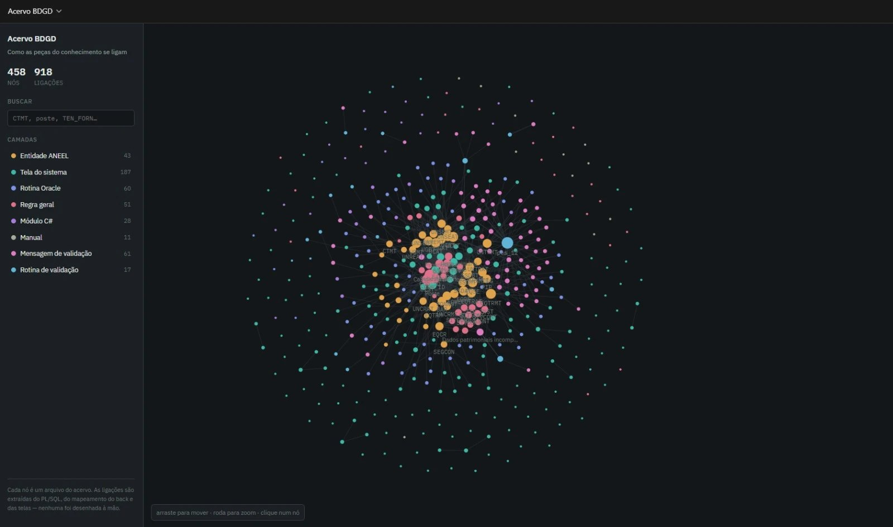
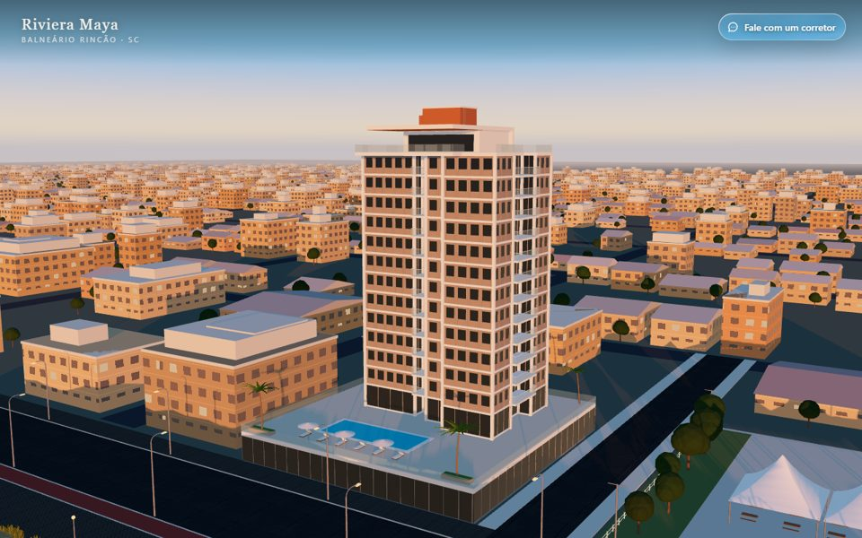
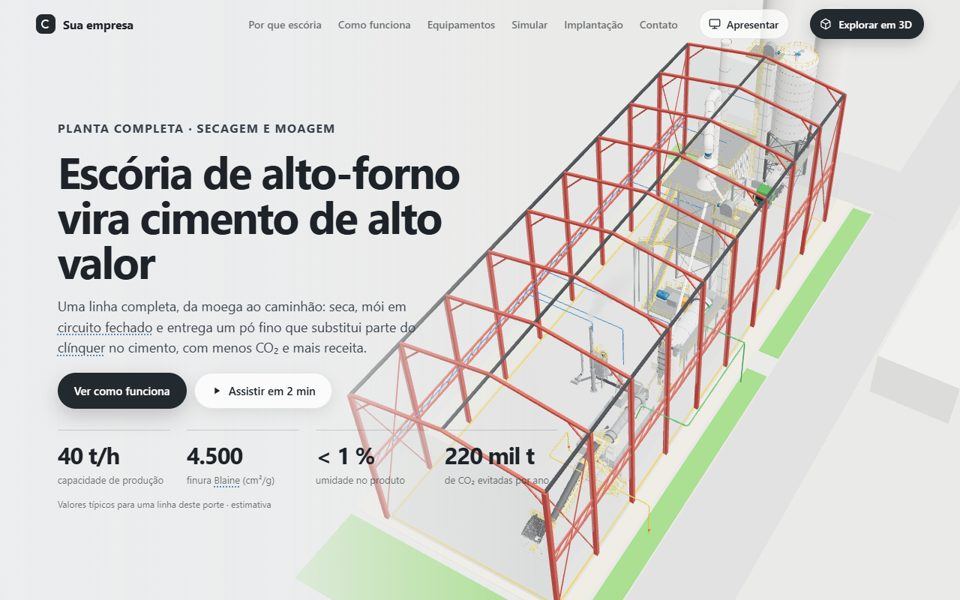
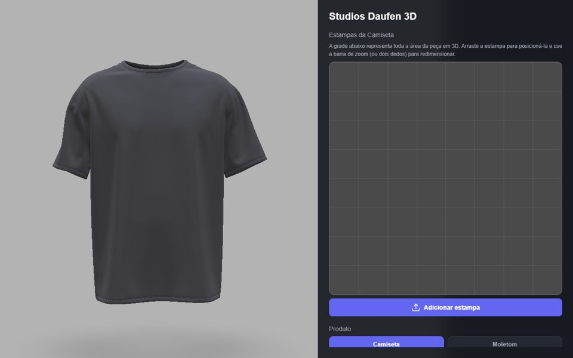

Engenheiro de software. Coloco IA dentro de sistemas reais e crio produtos 3D que rodam direto no navegador.
Sou de Criciúma (SC), tenho 25 anos e sou formado em Engenharia de Software pela Unisatc. Trabalho há mais de dois anos na Useall Software, em sistemas do setor elétrico. Sou muito criativo e acompanho o que está surgindo para aprender e construir também. Aqui estão alguns dos produtos que já criei.
IA aplicada

Todo ano as distribuidoras entregam à ANEEL a BDGD, uma base regulatória complexa que muda com frequência. Por iniciativa própria, criei um acervo que conecta o documento da ANEEL às rotinas do banco, ao back-end e ao front-end, ligando cada um dos 1.383 campos à sua origem, e um agente de IA que responde as dúvidas em linguagem simples.
O suporte já usa para atender mais rápido, e agora o agente está indo para dentro do sistema. Ele só lê e usa busca exata, sem banco vetorial: num contexto regulado, toda resposta precisa poder ser conferida.
Projeto interno da empresa: mostro a arquitetura, as decisões e esta imagem, sem o código e os dados.
Produtos 3D no navegador

Da foto aérea ao prédio em 3D: corta o andar, abre a planta e deixa entrar nos apartamentos antes de a obra ficar pronta.
Abrir o tour
A linha de produção em 3D, etapa por etapa, com as fichas dos equipamentos e uma simulação de custos e retorno para o vendedor apresentar ao cliente.
Abrir a planta
Nasceu dos uniformes da universidade: você posiciona a estampa e vê a camiseta ou o moletom em 3D na hora.
Abrir o mockupEducação